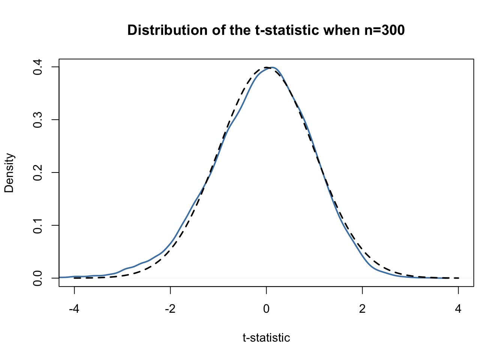

5.2 Confidence Intervals for Regression Coefficients
As we already know, estimates of the regression coefficients \(\beta_0\) and \(\beta_1\) are afflicted with sampling uncertainty, see chapter 4. Therefore, we will never estimate the exact true value of these parameters from sample data in an empirical application. However, we may construct confidence intervals for the intercept and the slope parameter.
A \(95\%\) confidence interval for \(\beta_i\) has two equivalent definitions:
- The interval is the set of values for which a hypothesis test to the level of \(5\%\) cannot be rejected.
- The interval has a probability of \(95\%\) to contain the true value of \(\beta_i\). So in \(95\%\) of all samples that could be drawn, the confidence interval will cover the true value of \(\beta_i\).
We also say that the interval has a confidence level of \(95\%\). The idea is summarized in Key Concept 5.3.
Key Concept 5.3
A Confidence Interval for \(\beta_i\)
Imagine You could draw all possible random samples of given size. The interval that contains the true value \(\beta_i\) in \(95\%\) of all samples is given by the expression
\[ \text{KI}_{0.95}^{\beta_i} = \left[ \hat{\beta}_i - 1.96 \times SE(\hat{\beta}_i) \, , \, \hat{\beta}_i + 1.96 \times SE(\hat{\beta}_i) \right]. \]
Equivalently, this interval can be seen as the set of null hypotheses for which a \(5\%\) two-sided hypothesis test does not reject.
R Simulation Study 5.1
To get a better understanding of confidence intervalls we will conduct another simulation study. For now, assume that we are confronted with the following sample of \(n=100\) observations on a single variable \(Y\) where
\[ Y_i \overset{i.i.d}{\sim} N(5,25) \ \ \forall \ i = 1, \dots, 100.\]
# set random seed for reproducibility
set.seed(4)
# generate and plot the sample data
Y <- rnorm(n = 100,
mean = 5,
sd =5
)
plot(Y,
pch=19,
col = "steelblue"
)
We assume that the data is generated by the model
\[ Y_i = \mu + \epsilon_i \]
where \(\mu\) is the unknown constant and we know that \(\epsilon_i \overset{i.i.d.}{\sim} N(0,25)\). In this model, the OLS estimator for \(\mu\) is given by
\[ \hat\mu = \overline{Y} = \frac{1}{n} \sum_{i=1}^n Y_i \]
(try to verify this!) i.e. the sample average of the \(Y_i\). It further holds that
\[ SE(\hat\mu) = \frac{\sigma_{\epsilon}}{\sqrt{n}} = \frac{5}{\sqrt{100}}. \]
A large sample \(95\%\) confidence intervall for \(\mu\) is then given by
\[\begin{equation} KI^{\mu}_{0.95} = \left[\hat\mu - 1.96 \times \frac{5}{\sqrt{100}} \ , \ \hat\mu + 1.96 \times \frac{5}{\sqrt{100}} \right]. \tag{5.1} \end{equation}\]It is fairly easy to compute this interval in R by hand. The following code chunck generates a named vector containing the interval bounds:
cbind(
CIlower = mean(Y) - 1.96 * 5/10,
CIupper = mean(Y) + 1.96 * 5/10
)## CIlower CIupper
## [1,] 4.502625 6.462625Nowing that \(\mu = 5\) we see that our example covers the true value for the present sample.
As opposed to real world examples, we can use R to get a better understanding of confidence intervals by repeatedly sampling data, estimating \(\mu\) and computing the confidence interval for \(\mu\) as in (5.1).
The procedure is as follows:
- We initialize the vectors
lowerandupperin which the simulated interval boundaries are to be saved. We want to simulate \(10000\) intervals so both vectors are set to have this length. - We use a
for()loop to sample \(100\) observations from the \(N(5,25)\) distribution and compute \(\hat\mu\) as well as the boundaries of the confidence interval in every iteration of the loop. - At last we join
lowerandupperin an array.
# set random seed
set.seed(1)
# initialize vectors of lower and upper interval boundaries
lower <- numeric(10000)
upper <- numeric(10000)
# loop sampling / estimation / CI
for(i in 1:10000) {
Y <- rnorm(100, mean = 5, sd =5)
lower[i] <- mean(Y) - 1.96 * 5/10
upper[i] <- mean(Y) + 1.96 * 5/10
}
# join vectors of interval boundaries
CIs <- cbind(lower, upper)According to Key Concept 5.3 we expect that the fraction of the \(10000\) simulated intervals saved in the array CIs that contain the true value \(\mu=5\) should be roughly \(95\%\). We can check this using logical operators.
sum(CIs[,1] <= 5 & 5 <= CIs[,2])/10000## [1] 0.9487The simulation shows that the fraction of intervals covering \(\mu=5\), i.e. those intervals for which \(H_0: \mu = 5\) cannot be rejected is close to the theoretical value of \(95\%\).
Let us draw a plot of the first \(100\) simulated confidence intervals and indicate those which do not cover the true value of \(\mu\). We do this by adding horizonal lines representing the confidence intervals on top of each other.
# identify intervals not covering mu
# (4 intervals out of 100)
ID <- which(!(CIs[1:100,1] <= 5 & 5 <= CIs[1:100,2]))
# initialize the plot
plot(0,
xlim = c(3,7),
ylim = c(1,100),
ylab = "Sample",
xlab = expression(mu),
main = "Confidence Intervals: Correct H0")
# setup color vector
colors <- rep(gray(0.6), 100)
colors[ID] <- "red"
# draw reference line at mu=5
abline(v=5, lty=2)
# add horizontal bars representing the CIs
for(j in 1:100) {
lines(c(CIs[j,1], CIs[j,2]),
c(j,j),
col = colors[j],
lwd=2)
}
We find that for the first 100 samples, the true null hypthesis is rejected in four cases so these intervals do not cover \(\mu=5\). We have indicated the intervals which lead to a rejection of the true null hypothesis by red color.
Let us now turn back to the example of test scores and class sizes.The regression model from chapter 4 is stored in linear_model. An easy way to get \(95\%\) confidence intervals for \(\beta_0\) and \(\beta_1\), the coefficients on (intercept) and STR, is to use the function confint(). We only have to provide a fitted model object as the argument object to this function. The confidence level is set to \(95\%\) by default but can be modified by setting the argument level, see ?confint.
confint(object = linear_model)## 2.5 % 97.5 %
## (Intercept) 680.32312 717.542775
## STR -3.22298 -1.336636Let us check if the calculation is done as we expect it to be. For \(\beta_1\), that is the coefficient on STR, according to the formula presented above the interval borders are computed as
\[ -2.279808 \pm 1.96 \times 0.4798255 \, \Rightarrow \, \text{KI}_{0.95}^{\beta_1} = \left[ -3.22, -1.34 \right] \]
so this actually leads to the same interval. Obviously, this interval does not contain the value zero what, as we have already seen in the previous section, leads to rejection of the null hypothesis \(\beta_{1,0} = 0\).